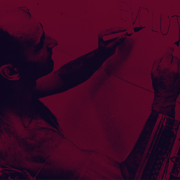
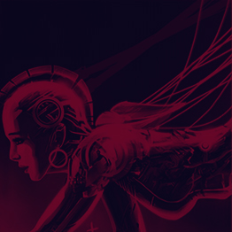

-
Abrotech 14h30-16h30
Gare st sauveur
-
John Fabrei 18h-19h30
Condition Publique
-
miguel parovla
14h00-15h30Condition publique
-
L33 - Austin
16h-18hgare st sauveur
-
Bot Project
15h-20hmaison folie wazemme

-
Z-machines
21h-22hmaison folie wazemme
-
Bio-protec
16h-17h30La condition publique
-
Dancing bot
18h-19h30gare st sauveur
-
proto-stream
17h-18hla Condition publique
-
Jane Masoni
15h30-16h30maison folie wazemme
-
Patrick Harno
13h30-15hla condition publique
-
metamorphis
19h30-20hmaison folie wazemme.

programmation